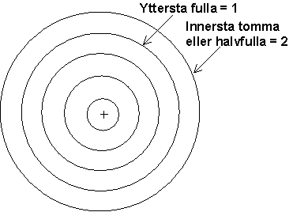

Kap 3 Laser och Laserteknik
Lasern bakgrund
Laserljus skiljer sig från annat ljus i ett antal avseenden:
Däremot
är ljuset inte speciellt energirikt. Ett par jämförelser: Solen ger vid ekvatorn ca 1300W/m² i effekt. En pulsad YAG-laser (Beskrivs på sid2 detta kapitel) ger på 100m avstånd ungefär lika mycket i medeleffekt. Tittar man däremot på maxeffekt momentant under pulsen får man ett 100000ggr högre värde. Men den allra största skillnaden är parallelliteten som bl a gör strålen så farlig för ögonen eftersom ögats lins har ett fokus på näthinnan vilket gör strålen fokuseras där. Den belysta fläcken där blir ngt tiotal µm². Ljus från 10mm² fokuseras alltså till 10µm² dvs till en miljondel så stor yta. Då blir också effekten per yta (kallas ofta intensiteten) 1.000.000 ggr högre än vid pupillen.I alla lasertillämpningar bör man vara på det klara med vilken av dessa egenskaper man vill använda. Är det inte helt klart, finns det säkert billigare och (för ögat) ofarligare ljuskällor att välja.
Fysikalisk bakgrund och strålegenskaper (nivå2)
För att förstå laserns verkningssätt är en barnslig liknelse bra att börja med:
Anslut en högtalare till en förstärkare och på ingångssidan av förstärkaren en mikrofon. Låt förstärkaren förstärka 10000ggr (totalt från mik till högtalare). Om man då närmar sig högtalaren med mikrofonen vet man (?) att man vid ett givet avstånd kommer ett obehagligt tjut att starta i högtalaren. Detta är rundgång eller oscillation, vilket har sin orsak i att mikrofonen plockar upp mer än 1/10000-del, säg som exempel 1/8000-del. Vilket ljud som helst (eller bara brus) kommer då att förstärkas 1.25 ggr. Ljudet växer alltså kontinuerligt i styrka. Detta fortsätter naturligtvis inte hur länge som helst utan så småningom planar ljudstyrkan ut och vi får en konstant nivå. Vad har
hänt då?
För att nu göra samma sak med ljus behöver vi alltså två saker:
Vi börjar med ljusförstärkningen:
Det finns fem sätt ljus kan växelverka med materia. Vi tittar på en atom med två intressanta energinivåer (det kemilärare brukar kalla skal). Med intressanta menas att det finns skal nära kärnan som inte deltar i ljusalstringsprocesser, och skal längs ut som är tomma och därför inte heller deltar. Vi vill befinna oss i gränslandet däremellan. Det yttersta skalet som är besatt kallar vi nivå 1, och det innersta som är tomt kallar vi 2 (3 kommer sedan utanför). Det är när elektronerna flyttas mellan dessa nivåer som ljus alstras eller absorberas. Skillnaden i energi mellan skalen avgör vilka ljusvåglängder som kan delta i processerna.
Absorption är när ljus med rätt våglängd kommer i tillräcklig närhet av en atom (molekyl). Ljusets energi används till att lyfta elektronen till den övre nivån. Därmed är den ljuspartikelns (fotonens) saga all och energin finns lagrad i atomen. Där kan den antingen ge upphov till värme när den ramlar ner igen eller ge upphov till emission. Sannolikheten (S) för att detta ska ske beror av; ljusintensiteten (I), antal atomer med elektronen i den undre nivån (N1) och en för oss ointressant atomfysikalisk storhet B
Spontan emission inträffar när elektronen av en eller annan anledning (kollision med annan atom pga värme eller absorption) tagit sig upp till den nivå 2. Däruppe väntar den en tid (varierar mellan 1ns och flera sekunder), men när den tiden gått ökat sannolikheten för att den ska ramla ner. När den gör det utlöses den lagrade energin som ljus. Detta sker vid en slumpmässig tidpunkt och i slumpmässig riktning. Sannolikheten ges av S=N1A där A är en ny atomfysikalisk storhet
Men (!!!) om ljus av rätt våglängd passerar atomen under den tid elektronen ligger i den övre nivån (dvs innan den ramlat) kommer den att utlösa ett fall för elektronen. Det ljus som då utsänds kommer att ligga helt i fas med samt ha samma riktning och våglängd som det förbipasserande ljuset som orsakade händelsen. Detta kallas Stimulerad emission. Dvs detta är en förstärkningsprocess. Sannolikheten för den ges av  , dvs den skiljer sig från absorption bara genom att det är antalet atomer i den övre nivån som räknas.
, dvs den skiljer sig från absorption bara genom att det är antalet atomer i den övre nivån som räknas.
Den fjärde processen innebär att ljus av fel våglängd passerar. Ljus och atom utför en handskakningsprocess för att se om de passar för varandra. Detta tar ngn femtosekund. När de upptäcker att de inte gör det fortsätter ljuset som om ingenting hänt. Vad kallas
detta fenomen och har vi använt det tidigare?Det sista fenomenet använder tre nivåer. Ljus som passar i våglängd till avstånder mellan nivå1 och nivå3 absorberas och lyfter elektronen till nivå 3, varifrån den efter en kortare tid faller till nivå 2. När detta sker sänds infrarött ljus, vilket oftast absorberas och blir till värme i materialet. Från nivå 2 faller elektronen sedan med spontan eller stimulerad emission (beroende på vad som sker först) till nivå 1. Härvid utsänds ljus med mindre energi (= kortare våglängd) än det ursprunliga. Fenomenet kallas fluorescens och används praktiskt i många sammanhang, exempelvis i optiskt vitmedel i tvättmedel och som signalfärg på regn/arbetsrockar.
Nu har vi alltså vår förstärkningsprocess: Stimulerad emission. Det gäller bara att få den att överväga över absorptionen. Tyvärr har naturen behagat obstruera och i alla naturliga situationer (oberoende av temperatur etc) är alltid N1>N2 vilket leder till att absorption överväger.
Kan man nu lysa på materialet med lampljus vid rätt våglängd? Nej! Det leder visserligen till att blir fler elektroner i nivå 2, men ju mer lika de blir i antal desto mer närmar sig sannolikheterna för absorption och stimulerad emission varandra. När dessa blivit lika har ljuset ingen effekt längre ty då är N1=N2 och materialet har blivit genomskinligt!!!! Men man tager vad man haver och vi kan ju alltid prova ett system med ytterligare en nivå.
Om vi tar ett 3-nivåsystem (rubin som exempel) och belyser (=pumpar) med ljus som passar för absorption 1
è 3 (grönt) kommer elektronerna att ta sig dit. Om nu "medelväntetiden" (spontana livstiden heter det egentligen) är kort kommer de snabbt att falla ner till nivå 2, där medelväntetiden i rubin är lång (det var bl a därför den första lasern som byggdes var av rubin). Om den gröna lampan lyser tillräckligt starkt kommer elektronerna att stockas i nivå 2 (vilket är vad vi vill). Nu har man inte längre något N1=N2-problem eftersom vi pumpar till en annan nivå än den vi vill samla elektroner på. Vi kan alltså i 3-nivå-systemet få en inverterad population om vi har fler elektroner "ute i rörelse" än vad vi har kvar på nivå (dit de trängtar av naturen). Detta ställer stora krav på pumplampornas intensitet och gör att em 3-nivlaser blir av "allt eller inget" typ. Om den lasrar så lasrar den så kraftigt att materialet inte klarar av att transportera bort den värme som alstras. Inte heller finns det lampor som kan försörja mewd tillräckligt mycket pumpljus under längre tid. 3-nivå-lasrar är därför i allmännhet pulsade och dessutom tämligen instabila pga av de stora kraven på pumpning.
En lösning på detta problem är att använda 4-nivå-system, dvs ett system där den undre lasernivån inte är den yttersta befolkade, utan den innersta tomma. Det innebär att endast en liten del av elektronerna behöver var exciterade, dvs ha flyttats från sin naturliga position (som i detta fall är nivå 0).
Lasrar av denna typ kan göras kontinuerliga och i princip med hur låg effekt som helst. De flesta moderna lasrar är 4-nivålasrar.
Detta är ett mycket enklare problem. Två speglar med reflektansen 1, ger nämligen en 100% återkoppling. Väljer vi istället att låta en av dess speglar ha reflektans på säg, 0.8 (och alltså transmittans 0.2)
innebär detta att vi får rundgång eller oscillation om vårt lasermaterial, med adekvat pumpning, ger en förstärkning större än 1.25.När lasern börjar pumpas
(pumplampor gröna i fig ovan) kommer då ljus att skapas med spontan emission (rött streckat) åt alla håll från laserstaven. För eller senare kommer någon av dessa slumpmässiga strålar att rätt riktning så att den kan studsa fram och tillbaka mellan speglarna. Denna riktning (och ingen annan) kommer då att uppleva rundgång och en stråle (röd fet linje) växer upp mellan speglarna som hela tiden växer i energi med en faktor som ges av produkten av förstärkningen och återkopplingen varje rundtripp.Så småningom blir intensiteten mellan speglarna så stor att förstärkningen sjunker till 1/återkopplingen, och vi har då fått en stabil situation. Varje rundtripp tappas 20% av ljuset av (med våra siffror), vilket ersätts med energi från den stimulerade emissionen, som. De 20% är alltså det som är vår laserstråle
(röd tunn linje)!I den obehaglige verkligheten ser det inte riktigt ut så här
Bakspegeln (den vänstra) är krökt
En filterbricka måste till för rensa strålen
Tidsmässig kontroll av strålen måste införas med olika metoder.
Om detta handlar nästa sida
Till
nästa sida (Strålegenskaper)Till
nästa kapitel (Vågoptik)Till
innehållsförteckningen